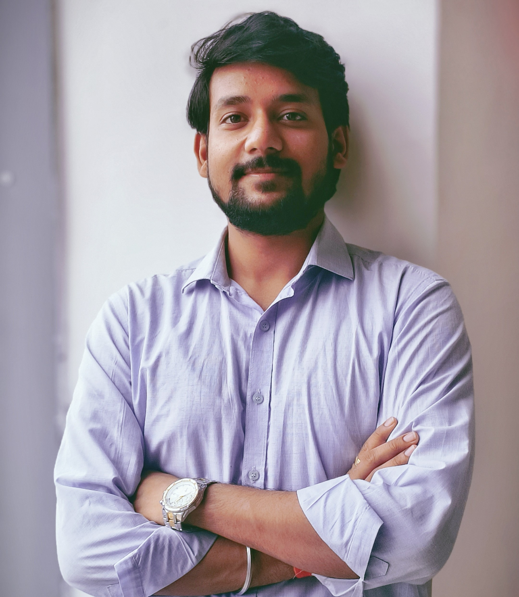

|  | Parag ShrivastavaConnect |
B.Tech student with a solid foundation in Python, C++, and Machine Learning. Built projects including a deepfake detection tool, a Python-based traffic manager using Banker’s Algorithm, and an AI voice assistant (Pia) with ChatGPT. Led backend development using Django at a Venture Nest startup. Currently learning LLMs, FastAPI, and AI deployment.
| Institution | Course/Branch | Year | Result |
|---|---|---|---|
| CGC | Btech in AI&DS | 2023-2027 | 3.4/4.0 |
| HCAS | PCM | 2022 | 84% |
Dev Hive:Core Tech Team Co-Head
Venture Nest, CGC Jhanjeri:Startup Incubatee
Email: Paragshrivastava727@gmail.com
9399306411 GitHub